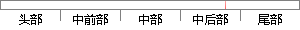

提供给用户登录的功能，能够让用户登录使用此系统。
片段位置图

相似结果|
相似片段 1：通过成功登录选择图 4-5 教师功能逻辑由教师功能逻辑可知，教师只有在完成注册并被管理员审核通过以后才能登录并使用系统，以下是教师平台提供给教师的具体功能：教师用户的站内邮件系统和个人信息维护功能与同学生用户的相同，教师也可以使用站内邮件功能收发邮件，并且对个人信息进行编辑。
相似片段 2：选择，默认是“使用登陆”，登录的方式是将登录提供给普通的用户，此外还有一类登录的方式是“管理登录”，专门提供给管理员运用。最后对确认的按钮进行点击，对分销商管理的系统加以登录。对复位的按钮进行点击，页面就回复到了初始的状态。
相似片段 3：实际需要选择“使用windows登录方式”或“使用Key登录方式”：如果此时用户选择“使用windows登录方式”，则直接登录到Windows操作系统中，但是此情况下，系统将锁定一部分Windows功能
相似片段 4：系统管理模块(1)登录日志：提供给系统管理员进行管理使用。记录所有用户的登录信息，包括登录帐号，登录时间，离开时间，登录主机的IP地址，登录是否成功，失败原因的信息。除了查看登录信息外，此子模块还提供给
相似片段 5：管理员修改存在问题的数据，并且可以查看系统参数配置竺寸0密码管理：提供给用户修改密码。3．2系统用例分析3．2．1确定参与者参与者是指系统外使用系统或与系统交互中所扮演的角色。通过对系统功能的分析后，最后确定系统中有三个参与者：管理员、教师和学生。
相似片段 6：的需求分析与设计文档。4.2 系统规划整个企业管理系统将要实现主要功能是：用户登录、收/发文管理、公告管理、文档管理、会议管理、员工管理，而其中的各个功能又分为几个小功能模块，该系统的功能结构图如
相似片段 7：4．1．2功能设计1．登录日志登录日志是提供给系统管理员进行管理使用的。记录所有用户的登录信息，包括登录帐号、登录时间、离开时间、登录主机的m地址、登录是否成功、失败原因等信息。除了查看登录信息外
相似片段 8：平台销售是为本身没有销售系统的SP提供的，这类产品在平台页面展示，用户在平台购买产品，产品使用权限信息记录在平台，用户登录令牌中会保存该信息，用户到SP网站使用产品，SP要在用户令牌中查看用户使用
相似片段 9：本系统的许多功能都是提供给注册用户使用的，比如说资源的上传是提供给教师用户使用的、资源的下载是提供给学生用户使用的。因此一般游客若想使用系统的某些功能，必须先进行注册经过审核成为注册用户之后，然后
|
※ 片段修改建议 ※
近似词参考：- 功能：功效
- 能够：可以或许
- 使用：利用
- 系统：体系
系统自动生成语句：提供给用户登录的功效，可以或许让用户登录利用此体系。
注：本片段修改建议为系统自动生成，仅供参考。